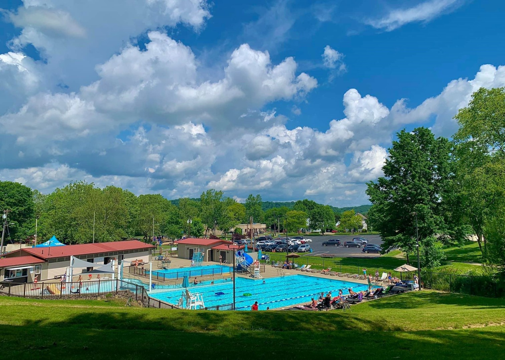
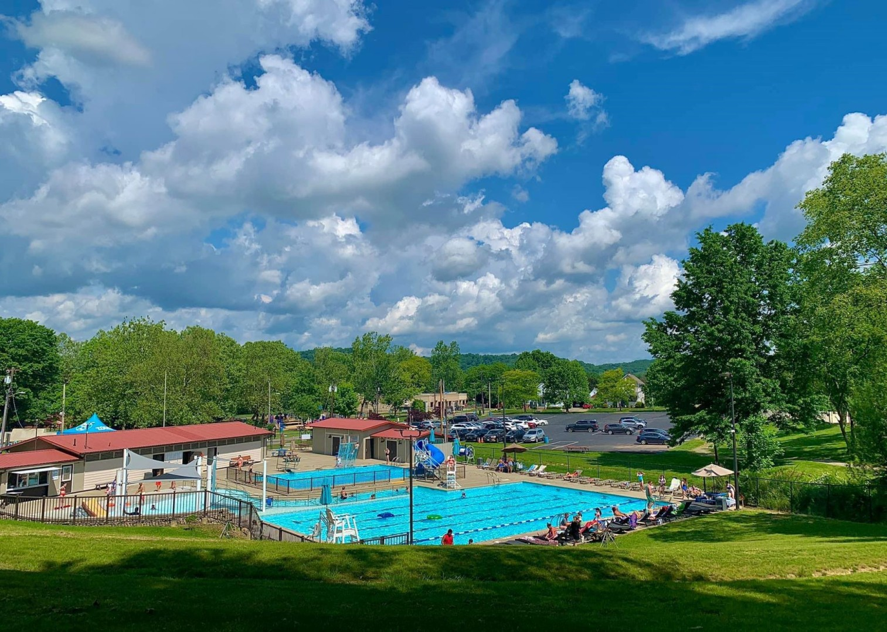
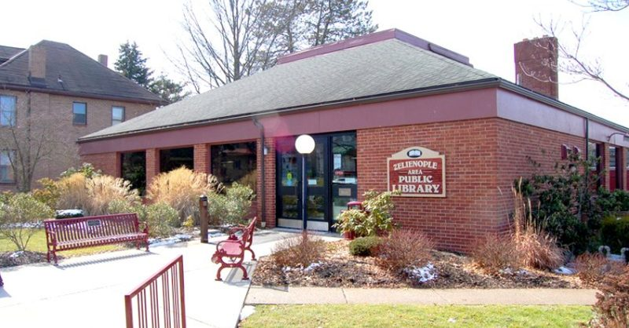
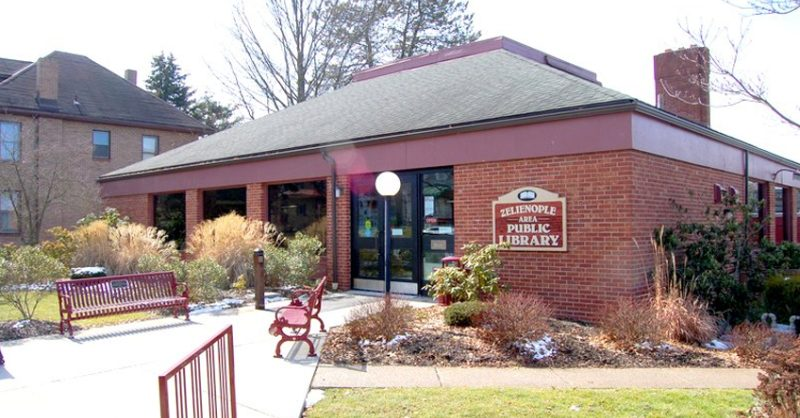

Welcome to our town!
We're so glad you could make it!
 Zelienople was founded in the year 1802 by Baron Dettmar Basse after he emigrated to Pennsylvania
from
Germany. The town was named for Baron's daughter, Frederika Wilhelmina "Zelie" Basse.
Zelienople was founded in the year 1802 by Baron Dettmar Basse after he emigrated to Pennsylvania
from
Germany. The town was named for Baron's daughter, Frederika Wilhelmina "Zelie" Basse.
Over the last 2 centuries, Zelienople has grown into a town for all walks of life, but has never lost
its charm!
From delicious restaurants and festivals to safe and secure living and all that is in between, you will
find it all in our little town! So what are you waiting for? Come pay us a visit and get to know Zelie
in all her glory!
Discover Zelienople in Pictures
 



 
